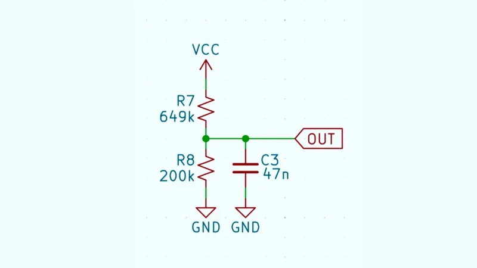
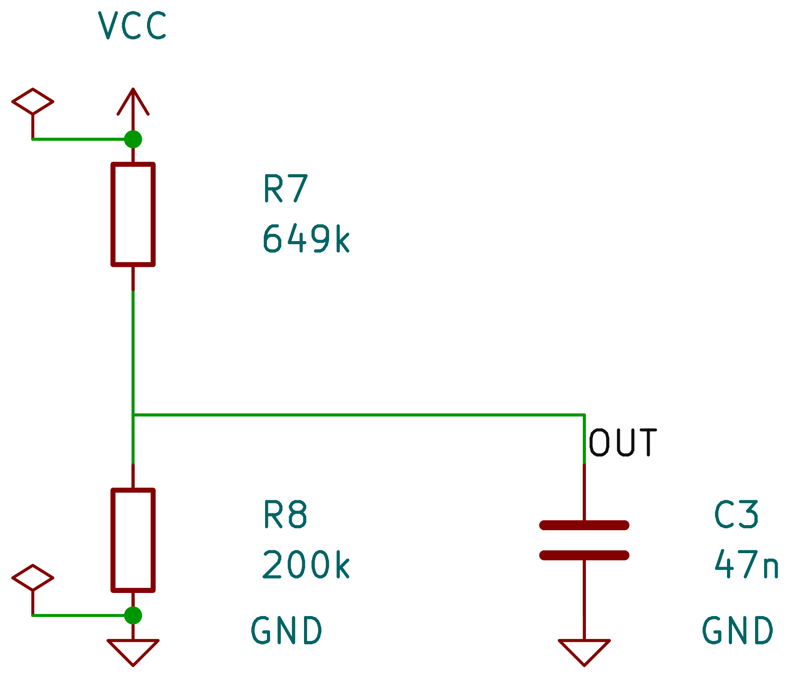
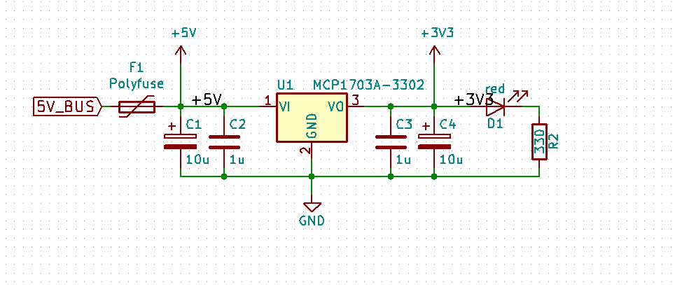
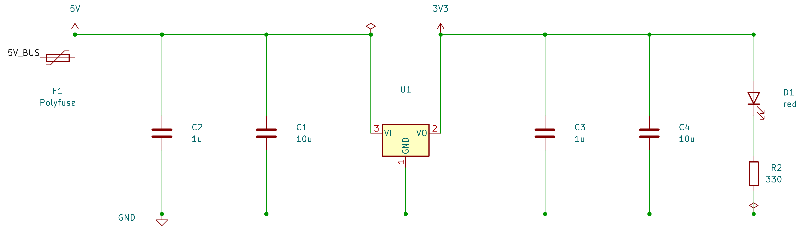
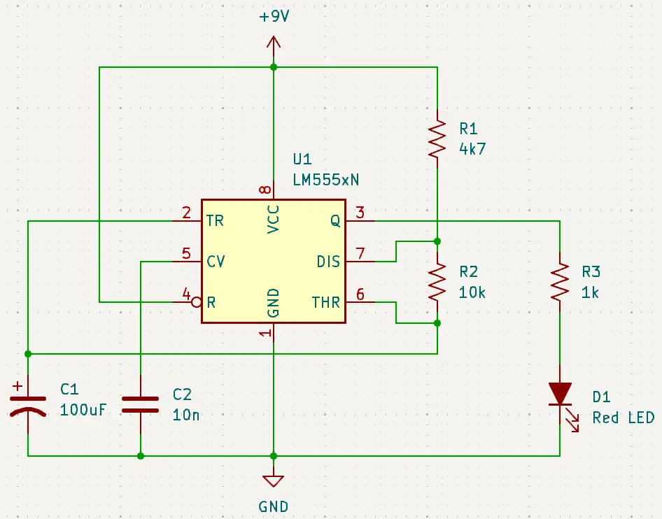
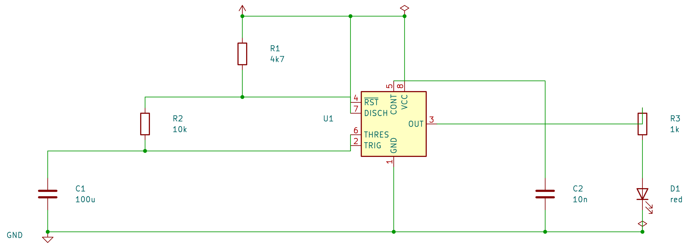
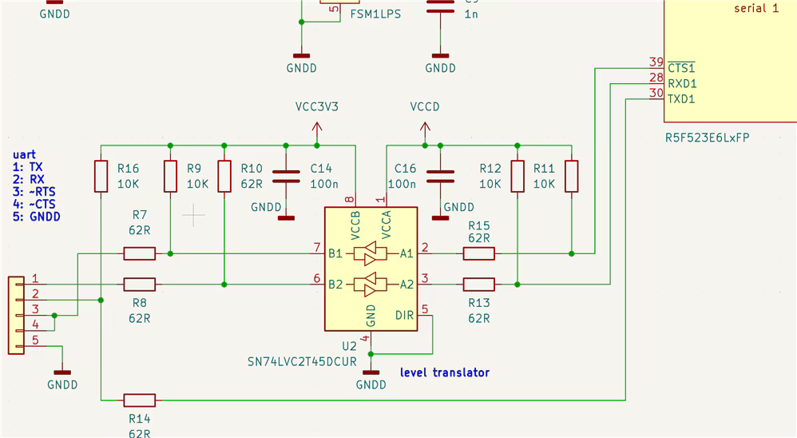
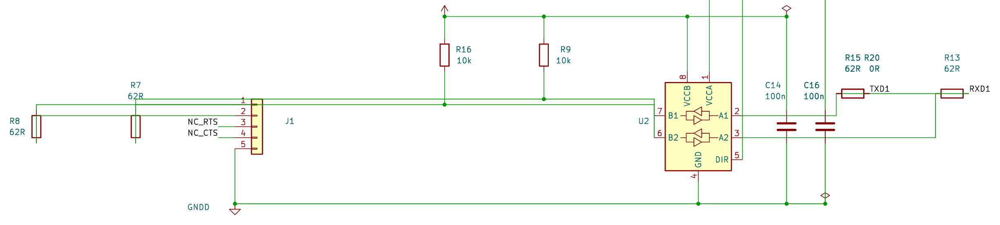

Each pair: the human-drawn reference (left) and what our agent now produces (right), generated end-to-end — netlist → LLM layout subagent → deterministic geometry compiler → KiCad. All four are ERC error-free.








Before, every one of these came out crammed into the top-left corner of an A4 sheet with a power symbol stamped at every pin and net-label spaghetti. Now: power rails, left-to-right flow, IC-anchored clusters, content-fit sheet.